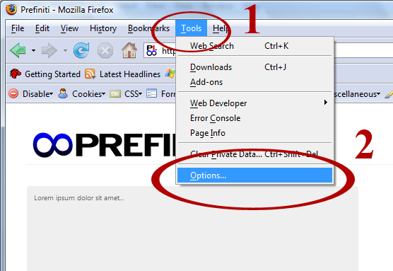
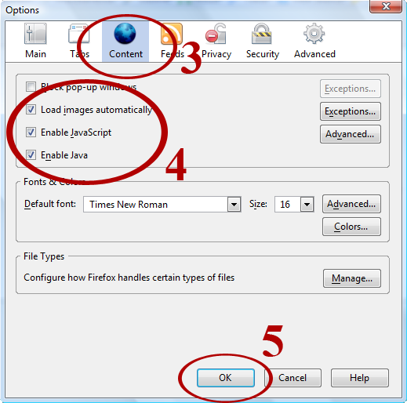

Prefiniti requires the use of Java. Click the link below to check if you already have Java or to install Java for free.

Open Firefox and select ‘Tools’ (step 1) and select ‘Options’ (step 2).

Make sure the ‘Content’ tab is selected (step 3). Make sure the option ‘Block pop-up windows’ is NOT selected. Select the boxes ‘Load images automatically,’ ‘Enable JavaScript,’ ‘Enable Java’ (step 4).

Click ‘OK’ (step 5).